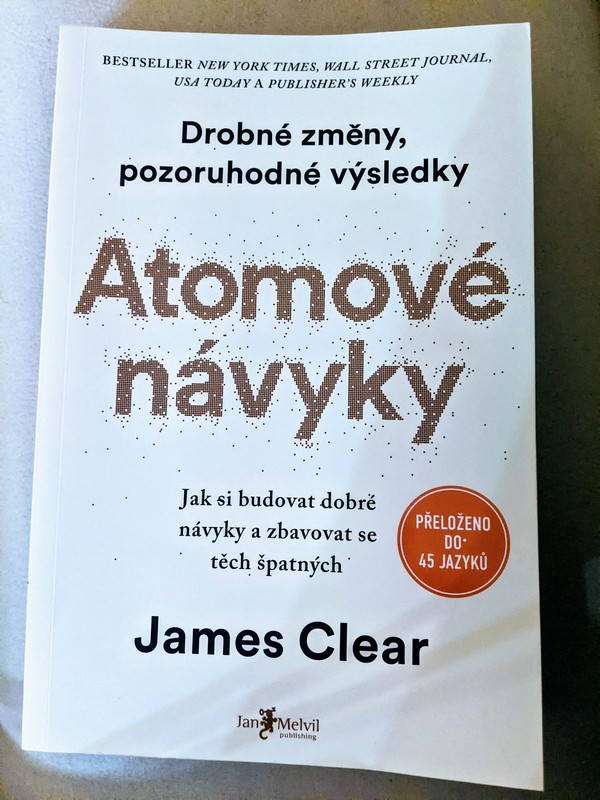
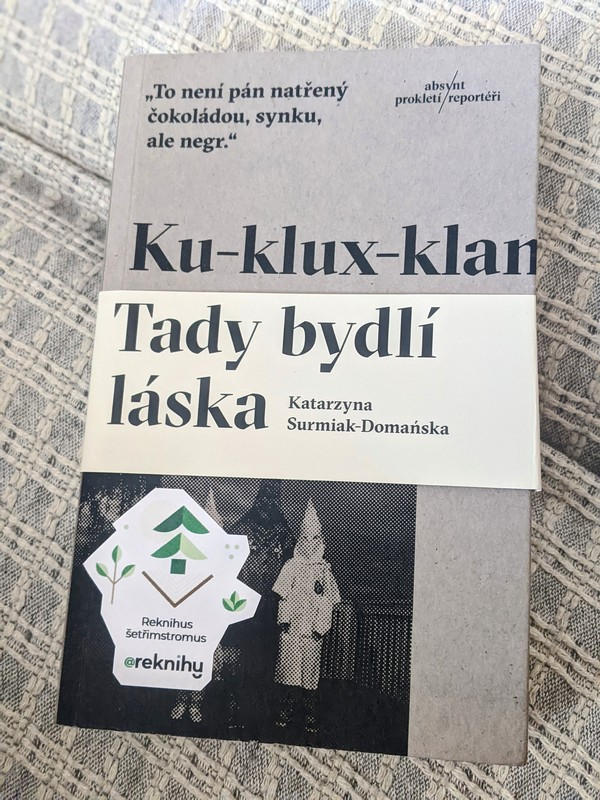
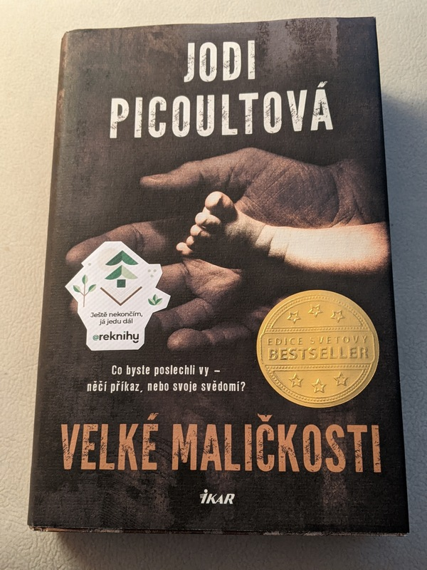

Těch pár týdnů opět uteklo jako voda a najednou tu máme zase konec podzimu. Dnes to tedy bude o knížkách, které mi tohle jinak dost neoblíbené a letos vyloženě divoké roční období ve volných chvilkách zpříjemňovaly. A taky o mém prvním nákupu na Reknihách :-)
James Clear - Atomové návyky
My všichni čelíme nesmírně silnému tlaku, abychom se podřídili normám své skupiny. Odměna za to, že nás druzí přijmou mezi sebe, je obvykle větší než odměna za to, že vyhrajeme spor, oslníme svým intelektem nebo nalezneme pravdu. Ve většině případů se budeme raději mýlit s davem, než mít pravdu o samotě.
Další “Melvilovka”, kterou jsem dostala k loňským Vánocům od Péti, byly mnohými opěvované Atomové návyky. V kostce je to kniha o tom, jak za pomoci drobných každodenních návyků krůček po krůčku postupně dosahovat svých vysněných cílů (nebo se naopak zbavovat svých zlozvyků). Nechci říct, že by kniha nebyla zajímavá, ale zkrátka ve mně nevyvolala takovou tu očekávanou reakci zkusit ji aplikovat v praxi. Dostatečně mě neinspirovala. Možná to bylo i tím, že na věci, které bych aktuálně ráda na sobě změnila, se mi autorovy tipy úplně nepodařilo naroubovat. Tím ovšem netvrdím, že na vás bude kniha působit stejně a že by nestála za přečtení. Jen mě bohužel v aktuální životní etapě tak nějak minula.

Katarzyna Surmiak-Domańska - Ku-klux-klan (Tady bydlí láska)
S touto knihou jsem si odbyla hned dvě premiéry - jednak je to moje první “Absyntovka” - publikace z vydavatelství světové reportážní literatury - a také jsem si ji vybrala v rámci své první objednávky z knižního “second-handu” Reknihy, což je projekt, kterému z celého srdce fandím. Díky Reknihám se mi podařilo prodat spoustu knih (především středoškolských učebnic), které mi měsíce marně visely na Bazoši a už jsem ani nevěřila, že by je někdo mohl chtít.
Téma rasismu ve Spojených státech mi přišlo zajímavé tím spíš, že jsem především jeho historickými souvislostmi poměrně nepolíbená a tato kniha, byť není vyprávěná úplně chronologicky, což by pochopení problematiky dost napomohlo, mi přinesla v tomto směru spoustu nových informací a “aha” momentů. Na začátku je čtenář vhozen do současné reality amerického Ku-klux-klanu (už jen fakt, že toto hnutí v USA stále funguje, pro mě byl poměrně šokující), aby postupně zabředával do americké historie, kde na začátku stojí brutální chování bílých k otrokům z Afriky a na konci jsou soudní procesy, v nichž prokazatelně dochází k rasismu “naruby”. Netvrdila bych rozhodně, že po přečtení knihy přehodnotíte na Ku-klux-klan v jeho aktuální podobě názor, ale minimálně dojdete k poznání, že nic není černobílé (což je v kontextu této problematiky docela vtipný slovní obrat 8-) a že rasismus je v USA stále obrovským (dost možná čím dál větším) problémem, s nímž se bude zákonitě potýkat ještě několik dalších generací Američanů. A že “Bible Belt” je v jistém smyslu naprosto bizarním krajem, který my průměrní Středoevropané asi nemáme vůbec šanci pochopit. Klobouk dolů před reportéry, kteří se nám jej pokouší aspoň trochu přiblížit.

Jodi Picoultová - Velké maličkosti
Aniž by to byl záměr, hlavním tématem druhé knihy, kterou jsem si na Reknihách vybrala je… rovněž rasismus v Americe. Tentokrát mistrně zpracovaný - tak, jak to Jodi Picoult umí - do čtivé beletrie. Příběh je vyprávěn z pohledu hned 3 hlavních hrdinů - zkušené afroamerické zdravotní sestry Ruth, která je obviněna ze smrti novorozence, amerického fašisty Turka, o jehož mrtvého syna se zde jedná a konečně právničky Kennedy, která dostane Ruthinu obhajobu na starosti. Od první do poslední stránky strhující příběh bude vaše nervy napínat k prasknutí. Milovníci soudních dramat si zde rovněž přijdou na své, protože významnou část knihy tvoří líčení soudního procesu (nepřestává mě fascinovat, jak moc se od procesu podle kontinentálního práva, jak ho známe my, liší). Téma rasismu je v knize zpracováno sice možná trochu teatrálně, ale rozhodně se nejedná o pohled černobílý. Pokud hledáte v knihách něco víc, než jen prvoplánový příběh, s Velkými maličkostmi určitě nešlápnete vedle. V mojí hlavě rezonovaly ještě dlouho.
